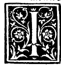

CHAPTER XXXV¶
How the Octocedron Is Formed and Inscribed in the Tetracedron.

We begin with the first proposition of the fifteenth book (Campanus XV.1), which shows how to inscribe the octocedron (8 triangular bases) inside the tetracedron (4 triangular bases).
Inscribing the Octahedron in the Tetrahedron (Campanus XV.1)
In a given regular pyramid of four equilateral triangular bases (tetracedron), to inscribe the regular body of eight equilateral triangular bases (octocedron) so that the six solid angles of the octocedron stand upon the midpoints of the six edges of the tetracedron.
Construction and Proof ([VI.2], [VI.4], [I.8], [XI.10])
Let the given tetracedron have base triangle \(abc\) and upper vertex (cone) \(d\), bounded by the four equilateral triangles \(abc, abd, acd, bcd\) and the six equal edges \(ab, bc, ca, da, db, dc\) (see the marginal diagram
0038.g1.pngon Folio 0038).Bisect each of the six edges of the tetracedron at its midpoint: let \(e, f, g\) be the midpoints of the three base edges \(ab, bc, ca\), and let \(h, k, l\) be the midpoints of the three ascending edges \(da, db, dc\).
Join these six midpoints by twelve straight lines:
Three in the base plane: \(ef, fg, ge\);
Three in the upper horizontal plane: \(hk, kl, lh\);
Six along the three lateral faces: \(eh, hf, fk, kg, gl, le\).
In each of the four equilateral faces of the tetracedron, the lines joining the midpoints of the sides are parallel to the third side ([VI.2]) and equal to half that side ([VI.4]). Since all six edges of the tetracedron are equal, each of the twelve connecting lines \(ef, fg, ge, hk, kl, lh, eh, hf, fk, kg, gl, le\) equals half the edge of the tetracedron!
Therefore, the eight triangular faces bounded by these twelve equal lines—four lying flat within the four faces of the tetracedron (\(efg, ehf, fkg, gle\)) and four cutting off the four corner pyramids at \(a, b, c, d\) (\(eh l, hfk, kgl, hkl\))—are all equilateral and mutually equal; and their solid angles are mutually equal ([XI.10]).
Thus the regular octocedron \(efghkl\) is inscribed in the tetracedron \(abcd\), with its edge equal to half the edge of the tetracedron (so the edge of the tetracedron is double the edge of its inscribed octocedron, and the volume of the tetracedron—consisting of the central octocedron plus four corner tetrahedra of half the linear scale—is double the volume of the inscribed octocedron!).